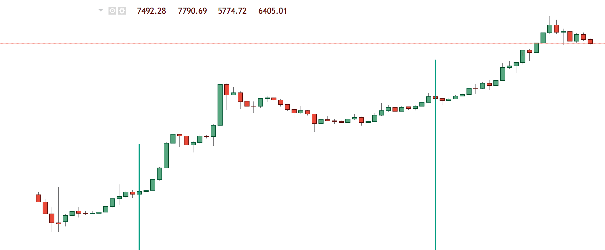
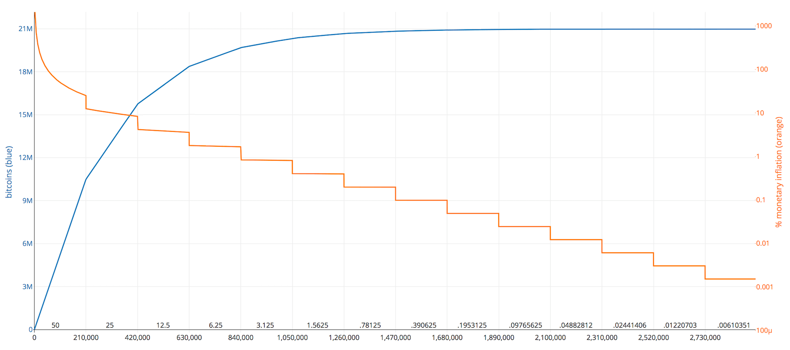

Halving de la blockchain, date ETA :
Date ETA :


De nouvaux bitcoins sont émis par le réseau Bitcoin toutes les 10 minutes. Au cours des quatre premières années de l'existence du Bitcoin, le total de nouveaux bitcoins émis toutes les 10 minutes était de 50. Tous les quatre ans, ce nombre est divisé par deux. Le jour où le total est divisé par deux est appelé « halving ».
En 2012, le total de nouveaux bitcoins émis toutes les 10 minutes est tombé de 50 à 25 bitcoins. En 2016, il est tombé de 25 à 12,5. Avec le halving 2020, il tombera de 12,5 à 6,25.
Le halving réduit le total de nouveaux bitcoins générés par bloc. Cela signifie que l'approvisionnement en nouveaux bitcoins est moins important.
Dans les marchés dits normaux, une offre réduite avec une demande soutenue entraîne des prix plus élevés. Sachant que le halving réduit l'approvisionnement en nouveaux bitcoins et qu'en général la demande reste soutenue, le halving coïncide aux cours les plus importants que le Bitcoin ait connus.
Dans l'image ci-dessous, les lignes verticales vertes indiquent les deux halvings précédents (les 28-11-2012 et 9-7-2016). Vous remarquerez à quel point le prix a augmenté à la suite de chaque halving.
Dans l'image ci-dessous, vous pouvez voir le taux d'inflation du Bitcoin au cours de chaque période.
Chaque halving diminue le taux d'inflation du Bitcoin. La ligne orange est le taux d'inflation du Bitcoin au cours d'une période donnée, tandis que la ligne bleue représente le nombre total de bitcoins émis.
Le halving du Bitcoin est programmé en hauteur de blocs, et non en date.
Le halving se produit tous les 210000 blocs. Le halving 2020 se produira à l'apparition du bloc 630000. Le halving 2024 se produira à l'aparition du bloc 840000.
De nombreuses personnes spéculent que les mineurs fermeront boutique à la suite du halving. En réalité, la plupart des mineurs sont très intelligents ; ils parviennent à fixer leurs prix en fonction du halving, ainsi ils ne se retrouvent pas à devoir fermer boutique.
Le halving 2024 aura probablement lieu entre mars et juin 2024.
Cette section examinera les deux halvings précédents.
Le halving de la blockchain 2012 fut le premier halving. Il a été miné par SlushPool, par une personne utilisant un mineur Radeon HD 5800.
Le halving 2016 fut le deuxième halving.
La subvention actuelle de la blockchain Bitcoin est de 12,5 bitcoins par bloc. Lorsque le bloc 630000 sera atteint en 2020, la subvention tombera à 6,25 bitcoins (BTC) par bloc.
Des milliers de bitcoiners dans le monde célébrèrent le halving 2016. Des fêtes ont eu lieu dans de nombreuses villes importantes telles que Buenos Aires, Melbourne, Montréal, Paris, Athènes, Dublin, pour ne citer que celles-ci.
Voici une vidéo de la célébration du halving et du HODL à Tel Aviv:
Lorsque des événements similaires seront postés, ils seront répertoriés ici !
Les 21 millions de bitcoins (BTC) seront minés d'ici 2140. Mais plus de 98 % seront minés d'ici 2030.
Oui, jetez un coup d'œil à ce site. Il est prévu que la blockchain Litecoin fasse l'objet d'un halving dans quelques années.
La récompense de bloc Ethereum ne peut être réduite de moitié à l'image de celle du Bitcoin, donc ce n'est pas prévu.
La Bitcoin clock existe depuis 2011. En 2018, le propriétaire a laissé le domaine expirer. Nous avons rénové le site et l'avons rétabli dans sa vision d'origine.
Le halving est nécessaire. C'est la façon dont Bitcoin contrôle son approvisionnement. Une fois que la subvention de la blockchain arrive à expiration, les frais de transaction paieront les mineurs pour sécuriser le réseau.
La plupart des autres estimateurs en matière de dates de halving utilisent des blocs de 10 minutes pour calculer l'estimation de la date du halving.
Toutefois, les blocs ont été minés à des intervalles de moins de 10 minutes dans presque toute l'histoire du Bitcoin.
Notre calculateur utilise les données de BTC.com pour obtenir le temps moyen entre chaque bloc au cours des deux derniers mois. Il utilise ensuite ce temps entre les blocs (actuellement 9.69166666667 minutes) pour évaluer la date du halving.
Tandis que la plupart des autres sites estiment que le halving aura lieu fin mai, il est plus probable que celui-ci ait lieu début mai.
Actuellement, 12,5 nouveaux bitcoins sont émis par bloc.